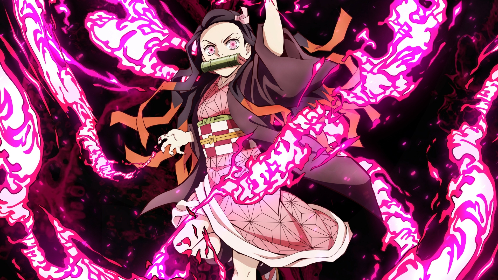
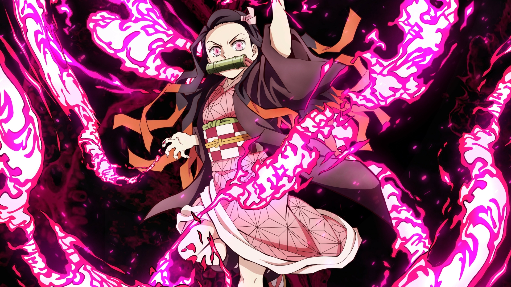

Tanjiro
Tanjiro é o protagonista de Kimetsu no Yaiba e a maior parte da trama gira entorno dos esforços dele para descobrir a cura para a irmã e vingar a família morta por onis.
Nezuko
A irmã de Tanjiro é meio-humana meio-demônia. Com um mínimo de contato com a própria humanidade, ela não cede aos instintos sanguinários dos oni, mas usufrui da força fornecida pelo sangue demoníaco.
Giyu Tomioka
Giyu Tomioka é um dos hashiras, pilares dos caçadores de demônios. Ele é a primeira pessoa com quem Tanjiro e Nezuko têm contato após o assassinato da família e, apesar do dever dele de exterminar onis, ele simpatiza com a história e determinação de Tanjiro e, então, o guia para que ele se torne um caçador de demônios e encontre a cura para a irmã. Além das dez formas tradicionais de respiração da água, Tomioka criou uma poderosa 11ª forma.
Zenitsu
Zenitsu se tornou um caçador de demônios para impressionar uma garota e isso deu errado. Covarde e chorão por essência e perdidamente apaixonado por Nezuko, o jovem foge de todo confronto que consegue. No entanto, com a respiração do trovão, despertada apenas quando ele está inconsciente, Zenitsu é um dos espadachins mais velozes vistos em Kimetsu no Yaiba.
Inosuke
Inosuke é um jovem caçador de demônios que passa a maior parte do tempo sem camisa e com uma máscarade javali em cima da cabeça. Com um temperamento explosivo, espírito competitivo afiado como aslâminas duplas e um intelecto consideravelmente baixo, ele é um fiel e poderoso companheiro a Tanjiro, embora rivalize com nosso protagonista em quase tudo.
Shinobu
Shinobu, além de ser uma exímia espadachim, tem experiência médica que ela leva ao combate. Apesar de não ter a mesma força física de seus companheiros, ela é igualmente letal, utilizando uma lâminamais fina coberta por um veneno mortífero.Ela utiliza a agilidade superior para alvejar os oponentes com múltiplos golpes venenosos e, por fim, os matando como um Pilar do Inseto deveria.
Kyojuro Rengoku - Hashira das Chamas
Rengoku utiliza a técnica da respiração das chamas (diferente da respiração especial de Tanjiro,a solar), que consiste em poderosos golpes feitos para incapacitar os oponentes. O entusiasmado rapaz é protagonista do filme Mugen Train e principal aliado de Tanjiro nesse arco sequencial daprimeira temporada. Quem assistiu garante: a história do Hashira é de emocionar, afinal, nem tudo são flores no mundo de Demon Slayer.